Index
- About
- Requirements
- Installation with default settings
- Trouble shooting
- Architectural concepts
- Provided ObserverAccountProviders
- Provided NotifyProviders
- Implementing an own ObserverAccountProvider
- Implementing an own NotifyProvider
About
TFSWIWatcher is a server side plugin which allows you to register for watching workitems in Team Foundation Server 2012. The plugin can be configured to use different logic to retrieve accounts to be notified and to deliver messages to the accounts to be notified.
By default TFSWIWatcher watches all changes of workitems and determines the accounts to be notified by looking up the texbox in a new tab of the workitem called Observers. This tab holds a list of account names - each account name on a singe line:
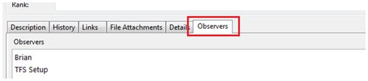TFSWIWatcher will then determine the email addresses of the provided account names and will send a mail to each account.
Requirements
Installation with default settings
Team Foundation Power Tools Installation
If you've not already installed TFPT please download and install it using the link under >> Requirements <<. You will need TFPT to complete the next step.
Adding the Observer-Tab for Workitems
After installing TFPT there will be a new Menu under Tools called "Process Editor":
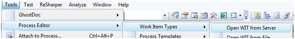Please navigate to the selection in the above screenshot.
In the next dialog choose one of the provided workitem types (you will need to reapeat the following steps for all other types):
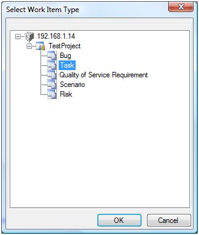In the next dialog click "New" and fill the poup with the Information from the screenshot and press "ok":
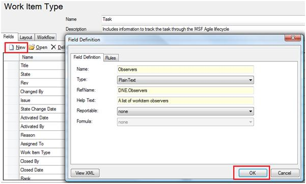In the next dialog click "New" and fill the poup with the Information from the screenshot and press "ok":
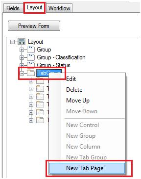Call it "Observers":
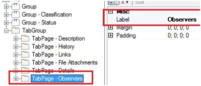Add a "New Control" to the newly created Tab Page:
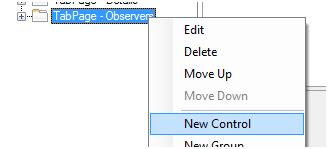Configure the Control exactly as in the following screenshot:
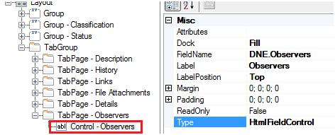Save the result and after opening a workitem you'll have a new Tab "Observers":
Installing the Plugin
To get the plugin running you have to copy the following files into the Plugins folder of Team Foundation Server 2012 (AppTier). For a standard installation the path to copy the following files would be something like this: "C:\Program Files\Microsoft Team Foundation Server 11.0\Application Tier\Web Services\bin\Plugins"
- log4net.dll (The logging framework)
- TFSWIWatcher.BL.dll (The plugin)
- TFSWIWatcher.BL.dll.config (You can modify settings for the plugin here)
- TFSWIWatcher.BL.dll.logconfig (You can modify settings for logging here)
Make sure that you have configured your mail settings in the Administrative Console of Team Foundation Server! Because the plugin will use the Mail-Settings of TFS to send mails.
Dont forgett to restart the TFS App Tier after the Plugin has been deployed!
Trouble shooting
When errors arise they are logged to a file named TFSWIWatcherlog.txt in the Temp-Directory of your server. Lo4Net is used for logging. You can change the way logging is done through modifying the content of the file TFSWIWatcher.BL.dll.logconfig:
More information about how to change this config and which possibilities exist can be found at the >> Log4Net website <<.
Architectural concepts
Overview
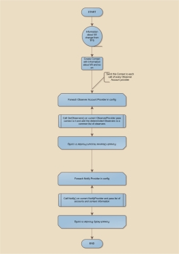
{kind=link}
1. Determining accounts to notify
In the configuration file TFSWIWatcher.Service.exe.config there is a section called ObserverAccountProviders. This section lists all providers collecting accounts to notify. By default there is a single provider in this list called TFSObserverAccountProvider. This provider gets the accounts from the observer field in the workitem that was changed by parsing the field line (account name) by line (account name). More information about ObserverAccountProviders are under >> this section <<.
2. Notifying accounts
In the configuration file TFSWIWatcher.Service.exe.config there is a section called NotifyProviders . This section lists all providers notifying accounts. By default there is a single provider in this list called MailNotifyProvider. This provider notifies the accounts by getting there mail addresses from user profile and sending them a mail containing a change report. More information about NotifyProviders are under >> this section <<.
Provided ObserverAccountProviders
Choosing an ObserverAccountProvider
You can add/remove/enable/disable an ObserverAccountProvider by changing the ObserverAccountProviders section. By default this section looks like the section below:
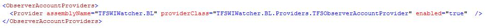The above configuration is for the TFSObserverAccountProvider, which is the default ObserverAccountProvider. Compared to CredentialsProviders there can be multiple ObserverAccountProviders. You can disabled a provider by setting the enabled attribute to false or by removing the provider from the ObserverAccountProviders section.
1. TFSObserverAccountProvider
This provider is the default ObserverAccountProvider to use it just add the line from the above heading. This provider needs further information which is configured using a custom configuration section. This section must be registered using the following line:
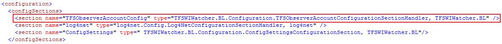The last step is to add the following section and to customize the settings:
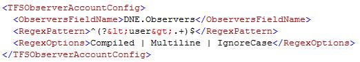The setting ObserverFieldName is the field of the workitem where the TFSObserverAccountProvider searches for accounts to notify. The default field name is DNE.Observers. You can change the name of the field but dont forgett to consider it in >> this step <<.The RegexPattern and RegexOptions field is used to extract the account names from the field holding the account names. The regular expression used here extracts the account names line by line. If you want to change the regular expression please consider having a group called user in your regular expression - this is mandatory. The provider also checks the observers of the previous workitem revision and will send a single notify mail to accounts that where removed from the list of observers, so that those observers can detect an unwanted removal from the list of observer.
Provided NotifyProviders
Choosing a NotifyProvider
You can add/remove/enable/disable a NotifyProvider by changing the NotifyProviders section. By default this section looks like the section below:
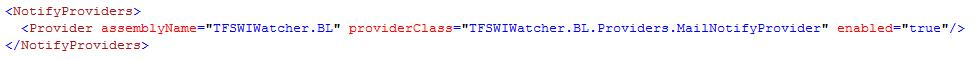The above configuration is for the MailNotifyProvider, which is the default NotifyProvider. Compared to CredentialsProviders there can be multiple NotifyProviders. You can disabled a provider by setting the enabled attribute to false or by removing the provider from the NotifyProviders section.
1. MailNotifyProvider
This provider is notifying accounts through sending mails. The mail address of the account names is determined through team foundation server API. This provider is the default NotifyProvider, to use it just add the line from the above heading. This provider needs further information which is configured using a custom configuration section. This section must be registered using the following line:
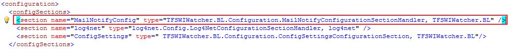The next step is to add the following section and to customize the settings:
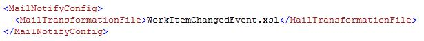Implementing an own ObserverAccountProvider
To implement your own ObserverAccountProvider just create a project and reference the assembly TFSWIWatcher.BL and create a class implementing the interface IObserverAccountProvider which is located in namespace TFSWIWatcher.BL.Providers. The interface has the following definition:
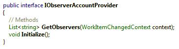The method Initialize() is called once by the service to allow the implementing provider to read configuration settings and to do other initialization stuff. The method GetObservers(..) is called each time a workitem change has occured. The implementing provider should return a list of accounts to be notified for this workitem change. The context parameter provides the implementing provider with information about the workitem and so on.
Implementing an own NotifyProvider
To implement your own NotifyProvider just create a project and reference the assembly TFSWIWatcher.BL and create a class implementing the interface INotifyProvider which is located in namespace TFSWIWatcher.BL.Providers. The interface has the following definition:
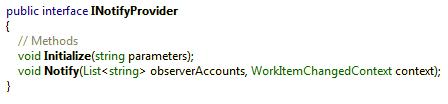The method Initialize() is called once by the service to allow the implementing provider to read configuration settings and to do other initialization stuff. The method Notify(..) is called each time a workitem change has occured. The implementing provider gets passed a list of accounts to notify for this workitem change as well as a context parameter providing information about the workitem and so on.